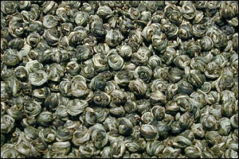

SCENTED TEA
Throughout its history, tea leaves have been enhanced by a wide
variety of aromatic substances. In modern tea processing, this tradition
continues under two major headings: "scenting" and "flavoring".
(A third category -really a form of blending- involves mixing aromatic
material into the tea leaves, as in the case of chai, which is made
by mixing tea with spices.) Two of the world's most popular teas are
jasmine and Earl Grey - perfect examples of scenting and flavoring.
Jasmine teas are scented, meaning that all that is added to the tea
is literally scent. To do this, tea leaves are picked, processed, dried
and then "layered" with jasmine flowers, i.e. stacked in alternating
layers of tea leaves and jasmine flowers separated by screens. For high
quality teas, such as Jasmine Pearls, the flowers are changed several
times and the scenting process can last up to a week. (Jasmine flowers
are mixed in with lower quality products for show, but they only contribute
negatively to the flavor since jasmine flowers themselves do not have
a pleasant taste.) Flavored teas are a much simpler affair. In these,
flavor (often in the form of a liquid or oil) is added to dry tea leaves
to create the desired effect. In the case of Earl Grey, oil of the exotic
bergamot fruit is absorbed by the tea leaves, which are then dried and
packed to seal in the flavor.

JASMINE-SCENTED
GREEN "PEARL" TEA
CLOSE
WINDOW